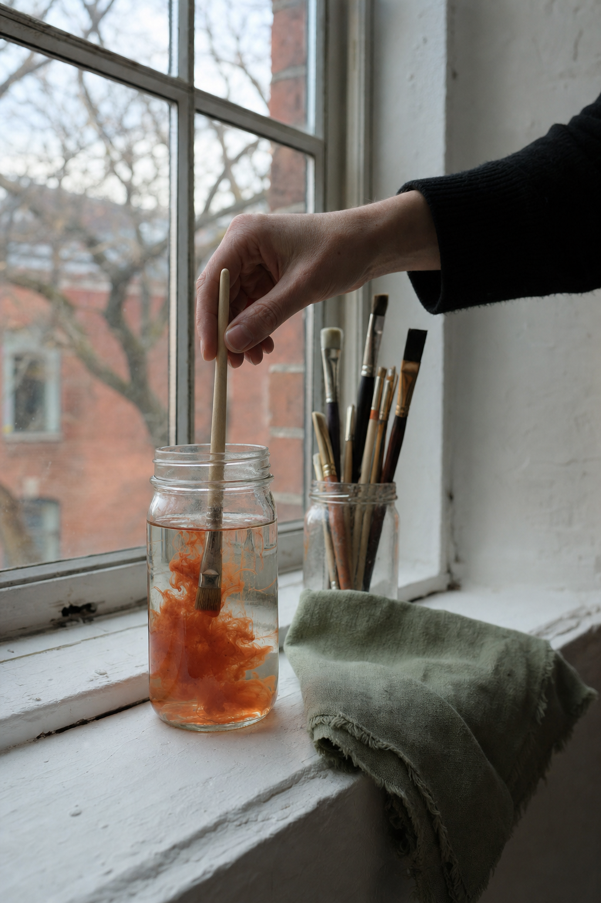
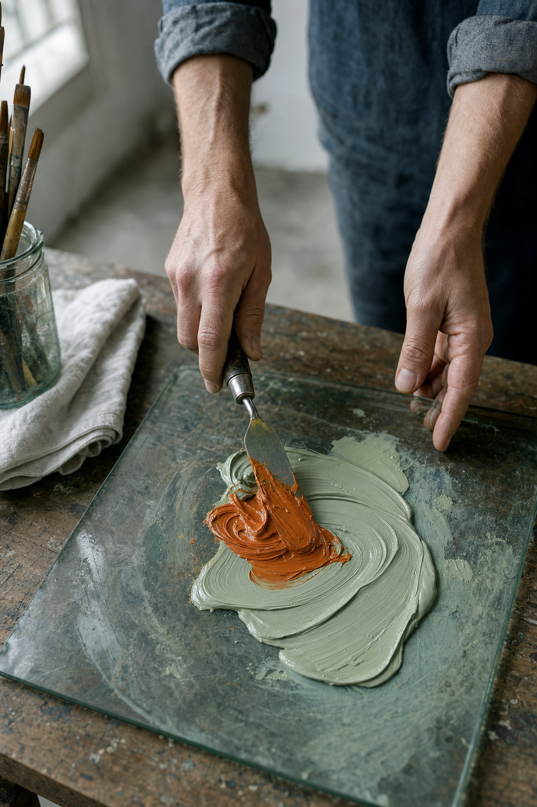

01The read
Something here is always drying.
Andrea — I'm Nelson Taylor, a creative director and shooter in Dallas–Fort Worth. I've spent some time with your site, your calendar and your Instagram, and the new exhibition opening in your gallery on Nov. 5 is what brought me to Art on Main. Congratulations on the show.
What I noticed is how much happens under one roof. Your about page describes artist studios, an exhibition space for group and solo shows, room for classes, artist talks and art education, and a gallery of contemporary work by your studio artists and local artists. Around all of it, a two-story brick building with high ceilings, polished concrete and large windows that let the light in all day.
Your Instagram bio says it in one line:
“Connecting with our community through art.”Art on Main, on Instagram
Exhibitions change on those walls. The working day around them keeps going: colour gets mixed, brushes get rinsed, a wall gets prepared for the next hang, the tables get laid out for a class. That day is the idea. Film the building itself, through materials, hands and light, and leave the work on the walls for people to see in person.

Studio 4 · the rinse
02The idea
Wet paint.
One format to carry the quarter, called Wet paint. Each reel opens on the same locked-off shot by the window: a palette knife pulling one fresh stroke of colour across a glass slab. Orange in one, sage in another, the two colours already in the Art on Main mark.
Then the cut follows that stroke into the building for a few seconds: a brush clouding the rinse jar, a studio door left ajar, a gallery wall lit and waiting, the class tables set before anyone arrives, the windows going blue at dusk. One line of copy on screen, and out.
Same opener, a different corner of the building each time. The feed keeps a steady rhythm between openings, your colours carry every reel, and no one has to step in front of the lens.

Studio 2 · the mix
03What we'd shoot
One day, first light to dusk.
One day in the building, on whichever day suits the studios; a quiet one gives us the rooms to ourselves. The plan keeps to materials, hands and empty rooms. Every hand on camera belongs to someone who has said yes, and the work on the walls stays off camera.
-
Studio 1 · first light
Creative direction — treatment frames, not final footage. First light
Morning across the polished concrete, with the big windows doing the lighting. The same frame again at dusk, lamps on, to close the day.
-
Studio 2 · the mix
Creative direction — treatment frames, not final footage. The mix
The Wet paint opener: knife, slab, one stroke, locked off. Shot once per colour, so every opener for the quarter is done by lunch.
-
Studio 3 · doors ajar
Creative direction — treatment frames, not final footage. Doors ajar
The corridor of studio doors as the day finds them, some shut, some open a crack, light falling through the gaps. Nobody in frame.
-
Studio 4 · the rinse
Creative direction — treatment frames, not final footage. The rinse
A brush swirled in a jar and a cloud of orange opening through the water. Macro stills on the A7RV, a slow push-in on the FX6.
-
Studio 5 · between shows
Creative direction — treatment frames, not final footage. Between shows
A gallery wall bare and lit, a level laid on a pedestal, the floor swept. The quiet before a hang.
-
Studio 6 · tables set
Creative direction — treatment frames, not final footage. Tables set
The class tables laid with jars, brushes and paper before anyone arrives. Empty, orderly, ready for the day.
Alongside the reels, the A7RV builds a stills bank from the same day and the same light: the building, the materials and the details, ready for the grid, the site and the next exhibition's announcement.
04The day
What the day includes.
Kept short and simple.
- 01One shoot day at Art on MainDirected and shot by me, in your building.
- 02Sony FX6 + Sony A7RVCinema motion on the FX6; stills and hybrid on the A7RV.
- 03Vertical firstEvery deliverable is cut 9:16 for Reels, TikTok and Shorts.
- 04Edited vertical videos and a stills bankFrom the same day, built to run for a quarter.
- 05Two rounds of editsAbout two weeks from the shoot to delivery.
Anything past that is something we'd talk through together on a call.
Studio 2 · the stroke
05Behind the camera
Who's behind the lens.
I'm Nelson Taylor. Taylormade Creative is my studio in Dallas–Fort Worth. I've spent fourteen years in design and creative direction, and these days most of it goes into brand content that I direct, shoot on the FX6 and the A7RV, and edit myself.
Recent work includes TONI&GUY Academy and Dreamcatchers Hair, and over the years client work has included Lava Cantina and KFC.
Design came first for me, so I frame for colour and light before anything else. The same pair of hands composes each shot and cuts it, so the plan on this page is what the edit is built from.
- 14 yearsdesign and creative direction
- FX6 · A7RVcinema motion and stills
- 9:16cut for the phone first
- Shoot to editone person, start to finish
Studio 4 · the jar
Studio 5 · the room
06Whenever it suits
At the gallery's own pace. Read it when there's a quiet hour between hangs.
If Wet paint feels like Art on Main, I'd be glad to walk the day through on a short call: the opener, the six shots, what to cut and what I've missed.
If the timing isn't right, “not yet” is an easy answer, and the concept will keep.
Email NelsonFounder & Creative Director · Taylormade Creative
(817) 707‑1291 · taylormademd@gmail.com
www.taylormadecreative.net · @taylormade_creative